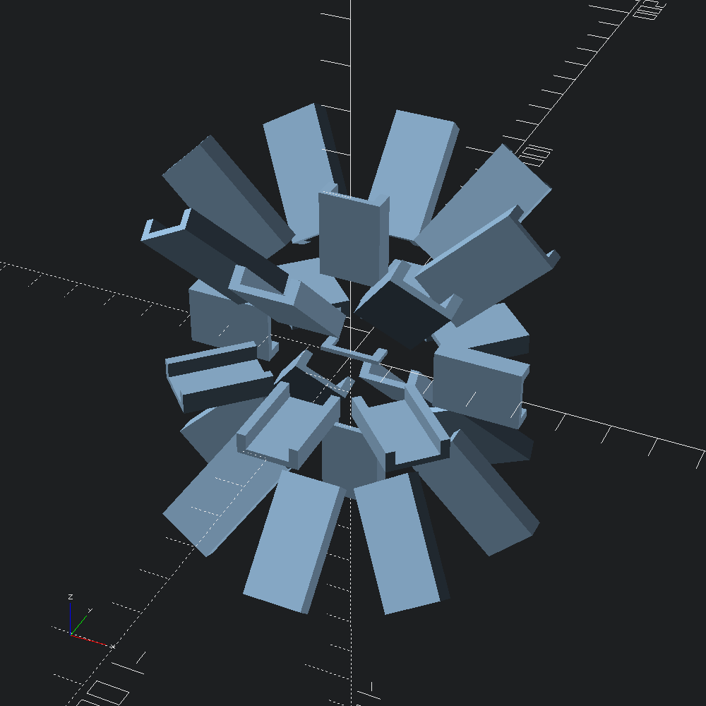

Default:

Euler:

open Scad_mlElbow shape for easily discernible orientation
let poly =
[ -10., -1.; -10., 6.; -7., 6.; -7., 1.; 7., 1.; 7., 6.; 10., 6.; 10., -1. ]
|> Path2.of_tups
|> Path2.scale (v2 0.7 0.7)
|> Poly2.makePaths radiating outwards from the origin, angled with 45° steps.
let paths =
let d = 20.
and p { x; y; z } = [ v3 x y z; v3 (x *. 2.) (y *. 2.) (z *. 2.) ] in
let out = [ v3 d 0. 0.; v3 d 0. d; v3 d 0. (-.d) ] in
let f i = List.map (fun s -> Vec3.rotate (v3 0. 0. Float.(pi /. 4. *. i)) s |> p) out in
p (v3 0. 0. d) :: p (v3 0. 0. (-.d)) :: List.concat_map f (List.init 8 Float.of_int)Original orientation of the shape poly for reference.
let flat = Scad.linear_extrude ~height:1. (Poly2.to_scad poly)Extrude poly along each of the generated paths, using either default/standard, or euler path transformations (see Path3.to_transforms).
let starburst euler =
let scad =
let f path = Mesh.(to_scad @@ path_extrude ~euler ~path poly) in
Scad.union @@ (flat :: List.map f paths)
and name =
Printf.sprintf "sweep_starburst_%s.scad" (if euler then "euler" else "default")
in
Scad.to_file name scad
let () =
starburst false;
starburst true